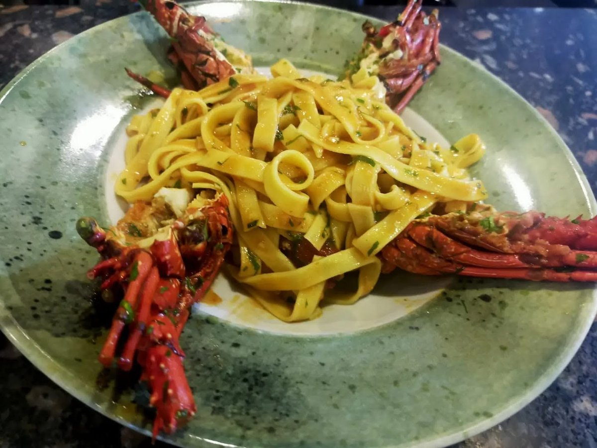
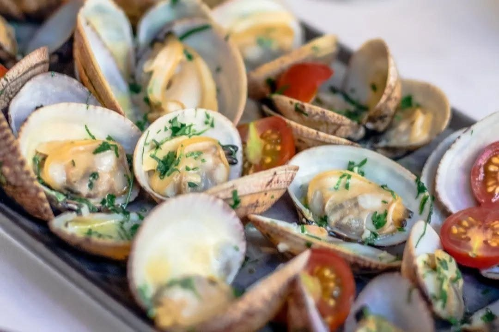
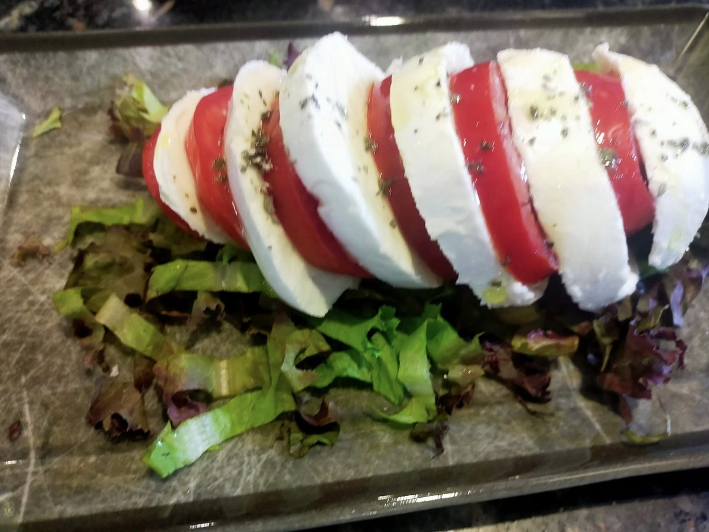
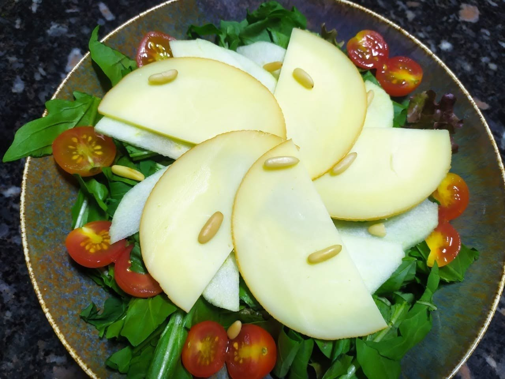
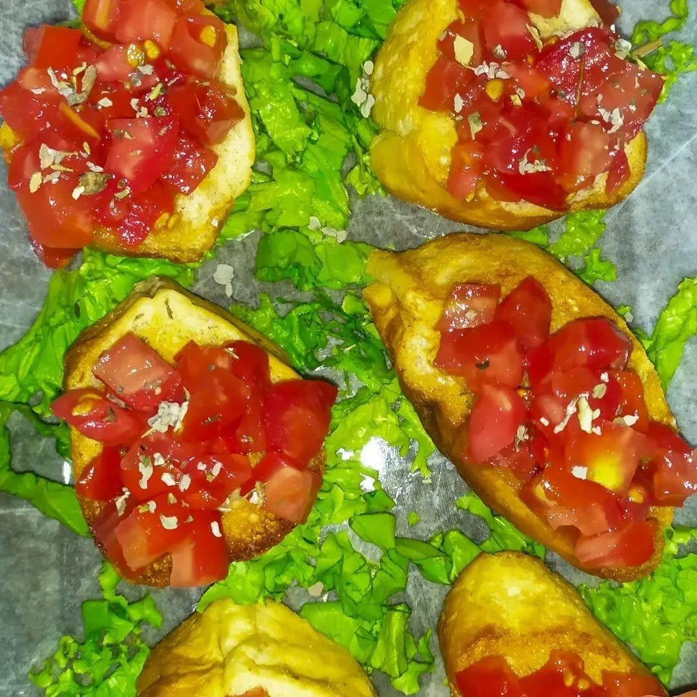

Tagliatelle alla Nostromo
Home-made pasta with lobster, garlic, olive oil, tomato sauce and parsley.
650
Prices in EGP. All prices exclude 12% service charge.

Home-made pasta with lobster, garlic, olive oil, tomato sauce and parsley.
650
Tomato and mozzarella di bufala served on a bed of lettuce.
330
Lettuce, rocket, apple, tomato, pine nuts and smoked cheese.
350
Traditional Italian garlic toasted baguette with chopped fresh tomatoes, olive oil and oregano.
120We can serve these dishes only if all the fresh ingredients we need for preparation are available. Ask, maybe you are lucky enough!
From the sea directly to your plate. All main dishes are served with grilled zucchini or oven potatoes.